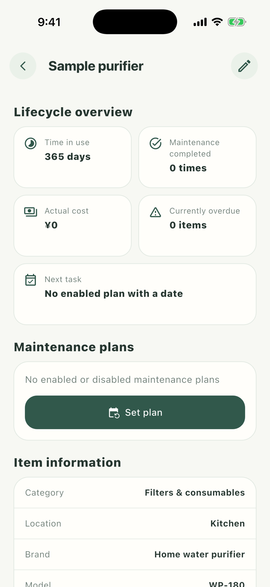
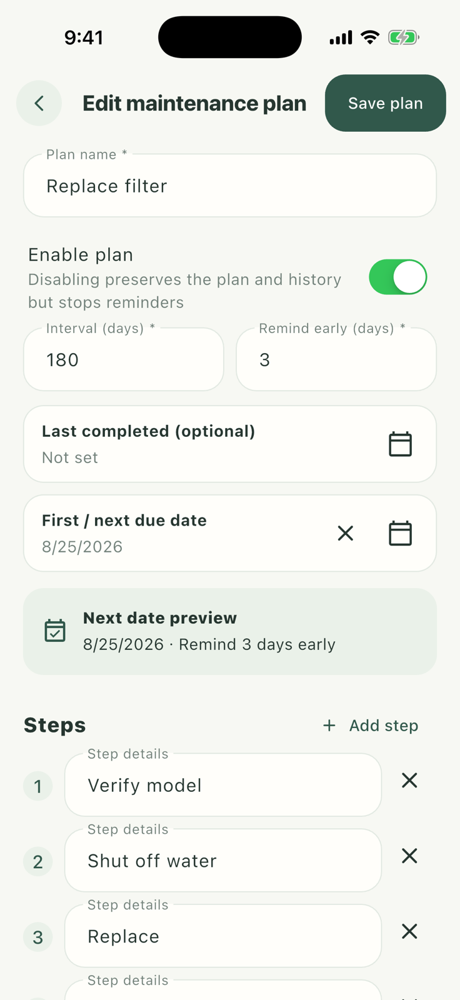

02 · Give care a cycle and clear steps
Create a care plan
Using “Replace filter” as the example, define the plan name, interval, next date, reminder lead time, and checklist together.


- 1
Open plan editing
Open the item detail, tap Set plan under Maintenance plans, then choose Add plan.
- 2
Choose the cycle and date
Enter the interval, then set either the last completion or next due date. The page previews the upcoming date.
- 3
Set the reminder
Choose how many days early to be reminded. Notification access is optional and never blocks saving a plan.
- 4
Prepare the checklist
Keep the useful template steps and edit, add, or remove steps to match the actual appliance, then save.